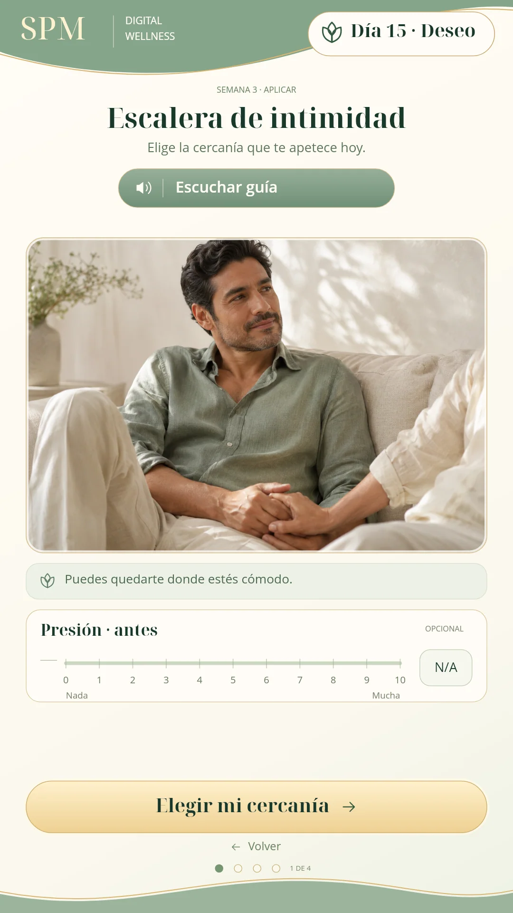
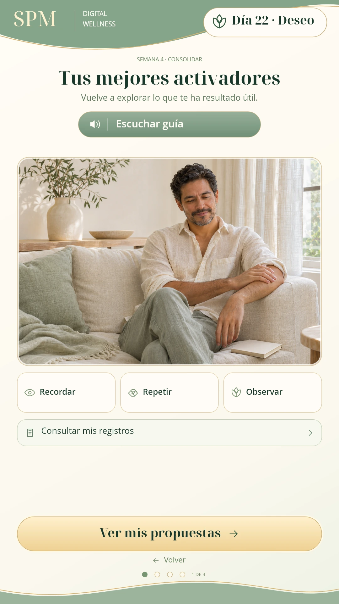

Semana 3 · Días 15–21
Sentir, conectar, elegir
Intimidad, focalización, comunicación y un contexto que acompañe tu experiencia.
Revisar semana 3Deseo · Recorrido de revisión
Abre una semana o elige un día. Toca las bocinas, explora las opciones y recorre cada práctica a tu ritmo.

Intimidad, focalización, comunicación y un contexto que acompañe tu experiencia.
Revisar semana 3
Reconoce tus preferencias, prepara alternativas y elige qué quieres seguir practicando.
Revisar semana 4La bocina explica el paso actual. Los halos señalan las zonas que puedes tocar; las selecciones, notas y cronómetros responden dentro de cada práctica.
Esta revisión guarda tus pruebas en este navegador. Los registros de pacientes y la evaluación oficial permanecen separados.
Abrir el recorrido de SPM Central